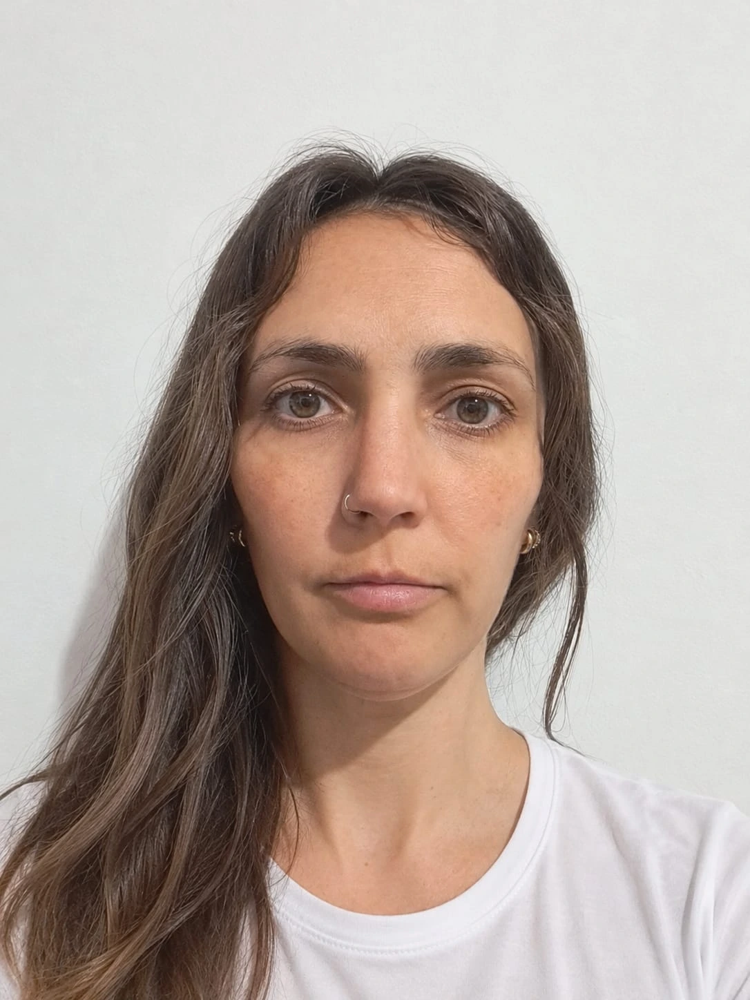

Diseño UX
Entrevistas, benchmark, arquitectura de información y tests de usabilidad.
- Proto-personas
- Card sorting
- Wireframes
- Maze
Disponible para pasantías y proyectos freelance
Diseñadora UX/UI y desarrolladora front-end. Investigo, prototipo en Figma y maqueto en HTML y CSS accesibles.
2
años de carrera
3
proyectos terminados
6
herramientas de diseño y código
5
cursos de UX y accesibilidad
Entrevistas, benchmark, arquitectura de información y tests de usabilidad.
Sistemas de diseño con componentes, tipografía y color con contraste verificado.
Maquetación semántica, responsive y mobile-first, sin frameworks.
Control de versiones, despliegue y auditoría de calidad.
Más reciente
Nov 2026 · Portfolio
Portfolio personal que reúne mi perfil, habilidades, formación y proyectos de UX/UI y desarrollo front-end.
Resultado: presenta mi trabajo y experiencia en un solo sitio, con acceso directo a los proyectos y formas de contacto.
Oct 2026 · Sitio web · Seguros
Sitio de seguros que presenta coberturas para celular, hogar, bicicleta y viaje, con contratación online.
Resultado: la propuesta destaca la cotización online para celulares y distingue las coberturas disponibles de las que llegarán próximamente.

Sep 2026 · Landing page · Café
Cómo organizar la oferta de una cafetería en una landing con menú, promociones y suscripción.
Ver caso: problema, proceso, solución y resultado.
2026
2025
2025
Soy estudiante de la Licenciatura en Sistemas de Información. Me interesa la tecnología, el diseño y la forma en que las personas interactúan con los entornos digitales. Me gusta aprender cosas nuevas, enfrentar desafíos y buscar soluciones prácticas a cada problema.
Creo que compartir ideas y experiencias permite lograr mejores resultados.
Siempre busco incorporar nuevos conocimientos y mejorar mis habilidades.
Compromiso con la calidad y atención en cada detalle.

Estoy buscando mi primera pasantía en diseño de producto. Escribime y te respondo en menos de 48 horas.